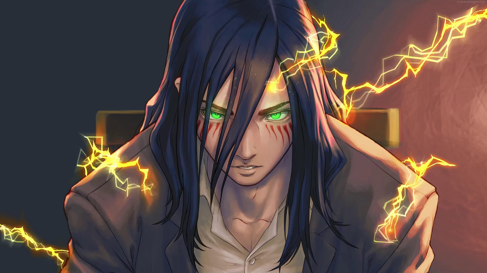

Eren Yeager
The boy who seek freedom

Eren's Declaration of War.
Introduction
Eren Yeager is the protagonist of Attack on Titan, an anime and manga that receives massive popularity around the world. When first introduced, Eren Yeager was a 15 years old boy living in Shiganshina District, the southernmost town of Wall Maria, the outer of Paradis Island.
From the first moment, he is shown as a passionate and impulsive boy. He has a strong will and is willing to protect mankind. His willingness to protect mankind makes him would do anything to reach his goal. Even later, he needs to lie or make people around him do violent acts.
Profile
- Real Name: Eren Yeager
- Birthday: March 30
- Birthplace: Shiganshina District
- Age:
15 Years Old (850)
19 Years Old (854) - Gender: Male
- Residence: Wall Rose
- Occupation: Soldier (former)
- Species: Human, Intelligence Titan
- Debut: Chapter To You, 2000 Years From Now
- Creator: Hajime Isayama
- Voice Actor: Yuki Kaji
Family
- Father: Grisha Yeager
- Mother: Carla Yeager
- Friends: Mikasa Ackerman, Armin Arlert, Levi Ackerman
- Enemy: Titans (previously), Theo Magath, Willy Tybur
- Affiliation: Yeagerist, Survey Corps (former)
Memorable Quotes
- “You are all free”
- "We're Born Free."
- “I never needed to happen.”
- “I'm the same as you. I didn't have any other choices.”
- “Ever Since I Was A Kid… Mikasa. I've Always Hated You.”
- “You're Not Soldiers. You're Not Warriors. You're Just Murderers.”
- “If you win, you live. If you lose, you die. If you don't fight, you can't win.”
- “I am free. Whatever I do. Whatever I choose. I do it out of my own free will.”
- “I'm gonna destroy them! Every last one of those animals that's on this world.”
- “If Someone Is Willing To Take My Freedom… I Won't Hesitate To Take Theirs.”
- “I don't have time to worry if it's right or wrong, you can't hope for a horror story with a happy ending.”
- “You have the freedom to defend the World's freedom and I have the freedom to continue moving forward.”
- “My head's gotten all messed up.The Founder's power has made it so that there's no past or future. It all exists at once. So I had to do it…”
Learn more about Eren Yeager here.